РАЗРАБОТКА КОНФИГУРАЦИИ ДЛЯ УЧЕТА ТОВАРОВ.
КОНТРОЛЬ СРОКА ГОДНОСТИ
ТОВАРОВ
Сложность: ***
Теги: справочник, документ, регистр накопления, обработка проведения, запрос, макет отчета
ЗАДАНИЕ
Заказчик просит разработать конфигурацию для учета товаров.
Многоскладской учет не ведется. Взаиморасчеты с покупателями и поставщиками не ведутся.
В системе необходимо регистрировать поступление товара. При поступлении товара пользователь в табличной части указывает, какие товары и в каком количестве поступили в организацию. Следует предусмотреть учет до граммов. При поступлении товаров указывается срок годности партии, для каждого товара – свой.
В системе нужно регистрировать продажу товара. При продаже товаров указывается, какие товары были проданы, в каком количестве, на какую сумму. При продаже товара необходимо, в первую очередь, списывать те товары, срок годности которых подходит к концу.
К примеру, если поставка молока «Буренка» поступила со сроками годности 30.01.2020
и 31.01.2020, то сначала списывается партия
со сроком годности 30.01.2020.
Продать товар «в минус» нельзя, в момент продажи необходимо проверять остаток товара.
Важно помнить, что пользователь может вводить документы задним числом!
В результате выполнения лабораторной работы должен получиться отчет вида:
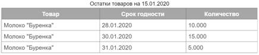
q Создать новую информационную базу.
q Открыть информационную базу в режиме «Конфигуратор».
q
Открыть дерево
метаданных.
Подробнее о том, как это сделать, смотрите в Лабораторной работе № 2 (стр. 17).
«Многоскладской учет не ведется. Взаиморасчеты с покупателями и поставщиками не ведутся».
Из данного условия делаем вывод, что в информационной системе не нужно хранить каких-либо данных о складах, покупателях и поставщиках.
«Заказчик просит разработать конфигурацию для учета товаров».
Появляется необходимость в хранении объектов аналитики, а именно – товаров. Для хранения перечня товаров будем использовать справочник.
Определение
Справочник – это объект конфигурации, который хранит справочную информацию, например, список сотрудников, складов и т. д. (более подробно про справочники можно прочитать здесь: https://v8.1c.ru/platforma/spravochniki/).
Добавим справочник «Товары».
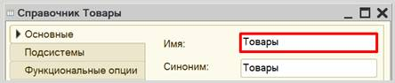
Таким образом, мы организовали хранение товаров в информационной
системе.
«В системе необходимо регистрировать поступление товара».
Для регистрации поступления товаров будем использовать документ.
Определение
Документ – это объект конфигурации, хранящий информацию о каких-либо событиях, произошедших в «жизни» предприятия. Например, с помощью документа можно зарегистрировать (то есть сохранить данные документа для последующей обработки) продажу товаров или начисление зарплаты (подробнее про документы можно прочитать здесь: https://v8.1c.ru/platforma/dokumenty/).
Добавим документ «ПоступлениеТоваров».
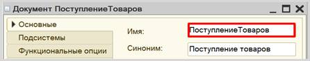
Для настройки структуры документа следует перейти на вкладку «Данные».
«При поступлении товара пользователь в табличной части указывает…».
Добавим табличную часть документа.
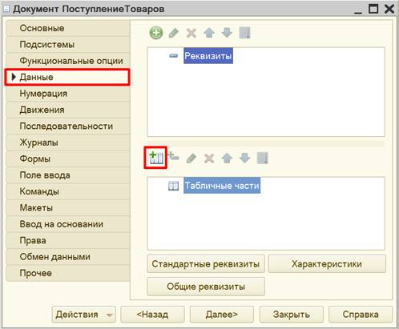
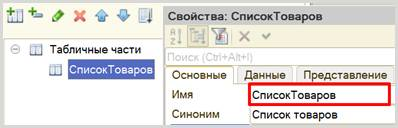
«…пользователь в табличной части указывает, какие товары и в каком количестве поступили в организацию. Следует предусмотреть учет до граммов. При поступлении товаров указывается срок годности партии, для каждого товара – свой».
Исходя из условия, табличная часть должна иметь три реквизита: «Товар», «Количество» и «СрокГодности». Добавим их.
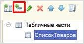
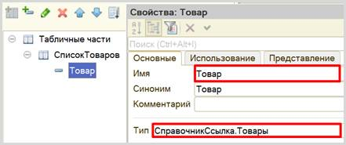
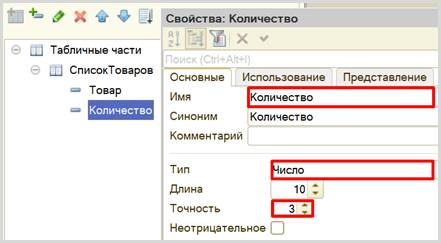
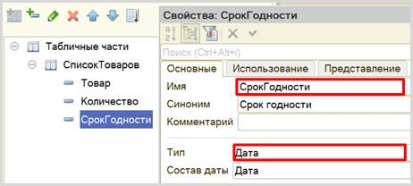
Теперь в системе можно регистрировать поступление товаров.
Далее нужно каким-то образом вести подсчет остатков товаров. Для этого нам потребуется регистр накопления.
Регистр накопления – это такая итоговая таблица, которая может автоматически считать какие-либо элементы, например, денежные средства, материалы (дополнительно про регистры накопления можно прочитать здесь: https://v8.1c.ru/platforma/registr-nakopleniya/).
Добавим регистр накопления «ОстаткиТоваров» вида «Остатки».
Вид регистра «Остатки» позволяет настроить данный регистр таким образом, что какие-то объекты будут вносить в него данные, а какие-то, наоборот, вычитать. Таким образом и получается хранение остатков.
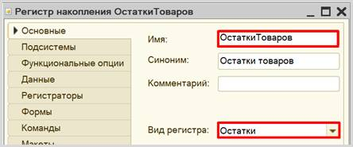
Открываем вкладку «Данные» для формирования структуры регистра накопления.
Добавим
ресурс. Что мы хотим считать с помощью данного регистра? Мы хотим считать
количество. Следовательно, количество и будет являться ресурсом. Тип данного
реквизита – «Число».
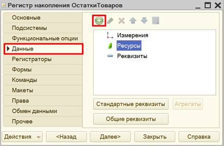
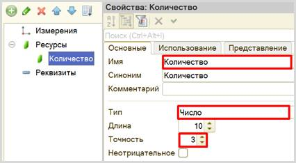
Чтобы разобраться с измерением, следует понять, в разрезе чего мы хотим считать количество. Мы хотим учитывать, количество (чего?) товаров с (чем?) различным сроком годности. Значит, в качестве измерения нужно добавить два реквизита: «Товар» (тип – «СправочникСсылка.Товары») и «Срок годности» (тип – «Дата»).
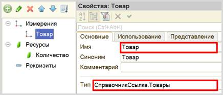
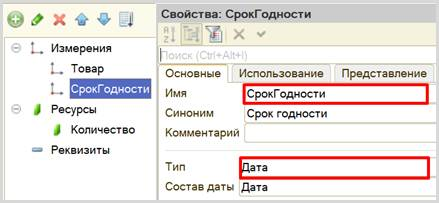
Чтобы регистр накопления заработал, нужно сделать следующее:
1. Определить источники данных, которые будут попадать в регистр (определить документы-регистраторы).
2. Описать, каким образом данные из каждого документа-регистратора должны попадать в регистры.
Сейчас в нашей конфигурации всего один документ, он должен передавать значения в регистр накопления. Откроем окно редактирования документа «ПоступлениеТоваров» на вкладке «Движения». Выберем регистр, в который будут передаваться данные документа, и воспользуемся конструктором движений.
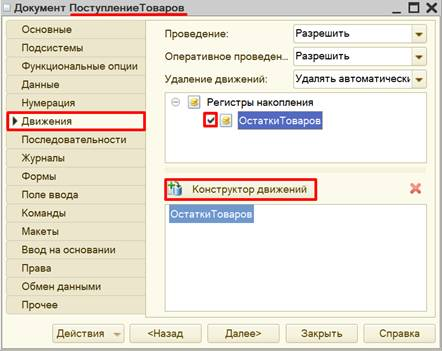
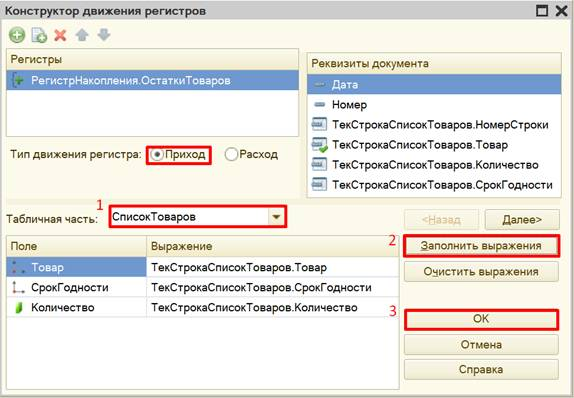
Окно конструктора движений состоит из нескольких областей:
q Левая верхняя область позволяет переключаться между регистрами (один документ может делать движения сразу в несколько разных регистров).
q Правая верхняя область описывает реквизиты документа-регистратора. Чтобы отобразить в данной области реквизиты табличной части нужно выбрать ее в соответствующем поле.
q В нижней части окна описаны реквизиты регистра накопления. Нужно заполнить поле «Выражение» реквизитами документа.
Поскольку получение товара должно увеличивать общее количество товаров, то тип движения регистра необходимо выбрать «Приход». Регистр будет обозначаться знаком «+» (плюс).
Если все было сделано правильно, имена и типы реквизитов совпадают, то при нажатии на кнопку «Заполнить выражения» реквизиты регистра заполнятся автоматически. Если этого не произошло, то заполните поле «Выражение» вручную, путем выбора соответствующих реквизитов документа.
При нажатии на кнопку «ОК» система сформирует программный код, который при успешном проведении документа произведет движения в регистр накопления, то есть скопирует данные из документа в регистр накопления.
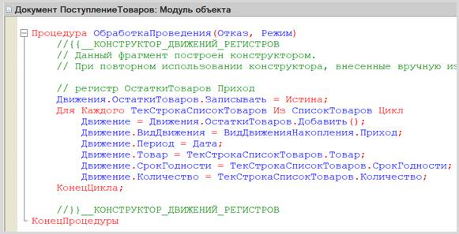
По данным, которые формирует регистр накопления, можно сформировать отчет.
Определение
Отчет – это такой объект конфигурации, который формирует данные в понятном для пользователя виде, например, в виде таблицы или диаграммы (подробнее про отчеты можно прочитать здесь: https://v8.1c.ru/platforma/otchet/).
Добавим отчет «ОстаткиТоваров».
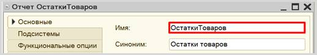
Создавать отчет будем с помощью формы. Переходим на вкладку «Формы» и создаем новую форму отчета.
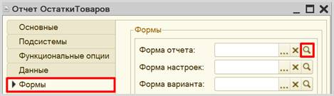
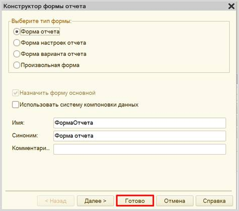
Открывается окно редактора форм.
Конструктор формы состоит из трех областей, каждая из которых отвечает за ту или иную функциональность формы:
q Снизу находится область предпросмотра формы. Она позволяет лишь приблизительно понять, как будет отображаться данная форма для пользователя, поскольку она может быть изменена с учетом множества различных факторов. Это своеобразная «иллюзия» того, что увидит пользователь.
q В правой верхней области находятся данные, которые мы вообще можем использовать в каком-либо виде на этой форме. Они разделены по вкладкам «Реквизиты», «Команды» и «Параметры».
q В левой верхней области конструктора формы описывается, какие именно данные будут представлены на форме, а также их графический вид. Здесь – две вкладки «Элементы» и «Командный интерфейс». На вкладке «Элементы» настраивается внешний вид и расположение реквизитов на форме. Вкладка «Командный интерфейс» определяет положение команд (кнопок) на форме.
Добавим новый реквизит «ТабДок», тип – «Табличный документ».
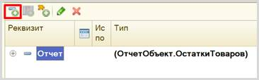
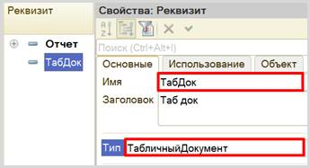
Перенесем созданный реквизит на форму.
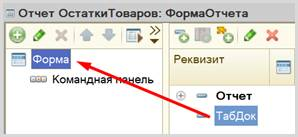
В области предпросмотра должна появиться заготовка табличного документа.
Далее добавим кнопку, при нажатии на которую будет формироваться отчет.
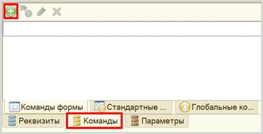
Дадим кнопке имя «Сформировать», перенесем ее на форму, а затем опишем ее действие.
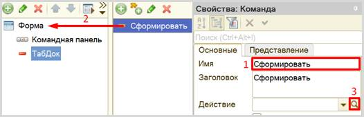
Система спросит, где ей создать обработчик команды: на клиенте или на сервере?
Поскольку для формирования отчета нам понадобятся данные из базы данных, доступ к которым можно получить только со стороны сервера, то выберем вариант «Создать на клиенте и процедуру на сервере».
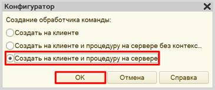
Система сформировала заготовки для двух процедур.
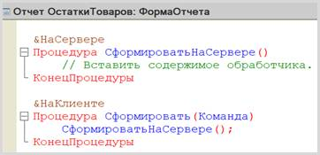
Внутри процедуры «СформироватьНаСервере» откроем конструктор запроса с обработкой результата. Для этого нужно вызвать контекстное меню правой кнопкой мыши, щелкнув по пустой области внутри процедуры. Из контекстного меню выбрать необходимый конструктор. Создадим новый запрос.
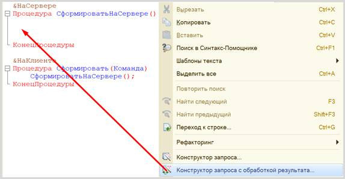
Откроется окно конструктора запроса. На вкладке «Обработка результата» из предложенных вариантов выбора обработки необходимо выбрать вариант вывода в табличный документ.
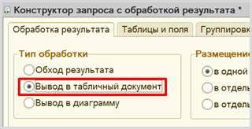
Переходим на следующую вкладку «Таблицы и поля».
Открывшееся окно имеет три части:
q Часть слева отображает все объекты конфигурации, имеющиеся в нашей базе данных. Нужно выбрать лишь те объекты, из которых мы хотим получать данные.
q Посередине находятся таблицы – это выбранные нами объекты, откуда мы хотим получать данные для конкретного запроса.
q Справа поля – это те значения (поля), которые мы хотим получить.
Данные будем брать не из регистра накопления напрямую, а из виртуальной таблицы, которую создает этот регистр автоматически. Данная виртуальная таблица способна обработать основную таблицу и самостоятельно посчитать остатки товаров.
Нам следует вывести в отчет все реквизиты виртуальной таблицы остатков.
Чтобы перенести данные из одного окна в другое, просто перетащите
нужные поля с помощью мыши либо воспользуйтесь стрелочками, расположенными
между окнами.
В результате данное окно должно быть заполнено следующим образом:
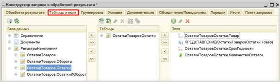
Далее переключаемся на вкладку «Порядок». Здесь можно упорядочить элементы так, как нам удобно. Упорядочим их сначала по наименованию, а затем – по сроку годности.
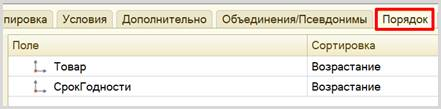
Далее переходим на вкладку «Итоги» и просуммируем все товары между собой. Для этого нужно заполнить поля следующим образом:
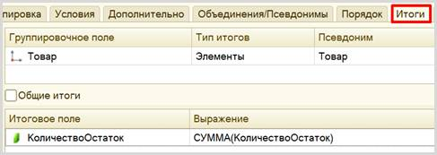
По завершении работы с конструктором движений нажимаем на кнопку «ОК».
Система на основе введенных ранее настроек сформировала макет, по которому будет строиться отчет.
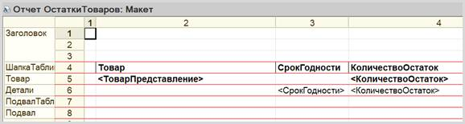
Внутри процедуры «СформироватьНаСервере» должен появиться код, который будет заполнять макет данными.
Теперь попробуем запустить систему в режиме «1С:Предприятие» и проверить, корректно ли работают созданные нами объекты.
Начнем с добавления новых товаров.
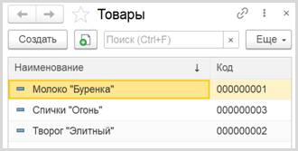
Теперь добавим несколько документов «Поступление товаров», причем для одних и тех же продуктов укажем разные сроки годности.
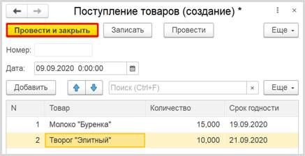
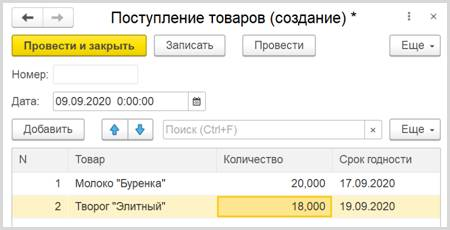
А теперь попробуем сформировать отчет.
Откроем его и нажмем на кнопку «Сформировать», которая находится под таблицей. Получаем отчет:
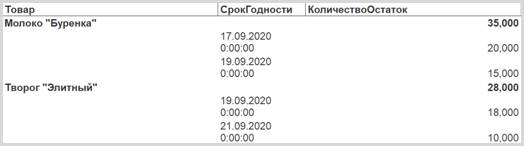
В отчете мы можем увидеть общее количество тех или иных товаров с различными сроками годности (обозначено полужирным). Произведено упорядочивание товаров, в первую очередь, по алфавиту, а затем уже – по сроку годности.
Данный отчет понадобится нам для реализации продажи товаров. Сначала мы можем посмотреть, сколько всего единиц того или иного товара у нас имеется, и только затем уже списывать товары из различных партий (с различным сроком годности).
«В системе нужно регистрировать продажу товара».
Добавим новый документ «ПродажаТоваров» путем копирования документа «ПоступлениеТоваров».
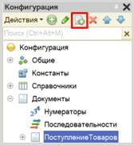
Должен появиться документ «ПоступлениеТоваров1». Переименуем его в «ПродажаТоваров» и перейдем на вкладку «Данные».
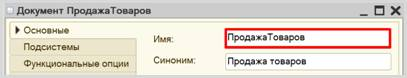
«При продаже товаров указывается, какие товары были проданы и в каком количестве».
Из данного условия делаем вывод, что в табличной части документа должно быть только два реквизита: «Товар» и «Количество». Значит, нужно удалить реквизит «СрокГодности» из табличной части.
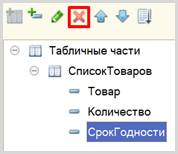
Теперь следует описать логику проведения данного документа. Для этого нужно открыть модуль объекта, который находится на вкладке «Прочее».
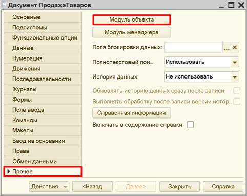
Документ был скопирован полностью, в том числе была скопирована обработка проведения. Закомментируем код процедуры. Для этого нужно выделить нужные строки и нажать на кнопку с изображением двух обратных косых черт.
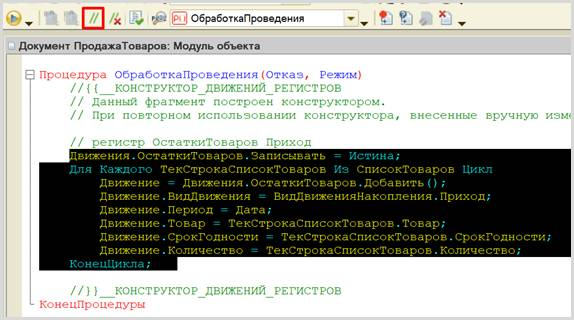
В документ «ПродажаТоваров» пользователь должен добавлять информацию о товаре и количестве, которое он хочет продать. В первую очередь, система должна проанализировать, достаточно ли каждого вида товаров для продажи. Если достаточно, тогда нужно списывать товар партиями по возрастанию срока годности.
Для проведения данного анализа необходимо получить данные как из документа, так и из регистра накопления. Получим эти данные с помощью конструктора запросов.
Этот конструктор можно открыть из контекстного меню щелчком правой кнопки мыши по области модуля. Данный конструктор обязательно должен быть вызван внутри процедуры «ОбработкаПроведения».
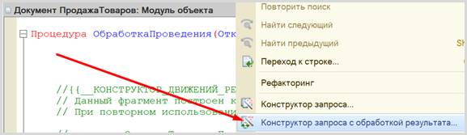
Соглашаемся с предложением системы создать новый запрос.
Открывается окно конструктора запроса с обработкой результата. Переходим на вкладку «Таблицы и поля». Здесь нам нужно выбрать поля табличной части документа.
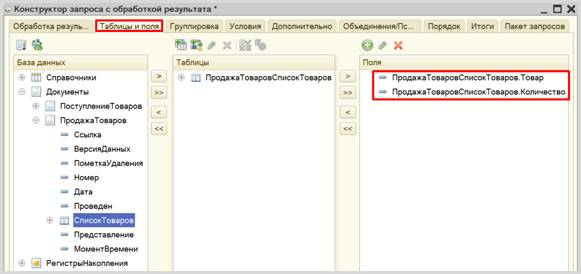
Переходим на вкладку «Группировка» и сгруппируем товары между собой: вдруг пользователь ввел несколько отдельных строк с одинаковым товаром?
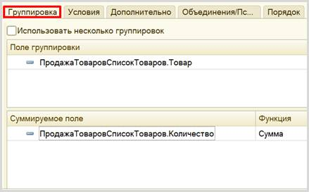
Далее переходим на вкладку «Условие» и поставим условие на ссылку. Таким образом, запрос будет обрабатывать табличную часть только того одного документа, чью ссылку мы передадим в запрос.
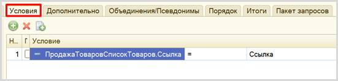
Теперь все полученные данные из документа «ПродажаТоваров» следует поместить во временную таблицу. Для этого переходим на вкладку «Дополнительно», выбираем пункт «Создание временной таблицы» и зададим ей имя «ДОК».
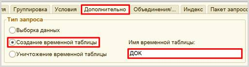
Переходим на вкладку «Индекс» и проиндексируем таблицу по полю «Товар», поскольку далее нужно будет соединить несколько таблиц.
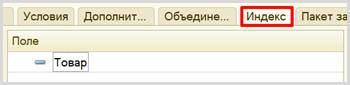
Переходим на вкладку «Пакет запросов» и добавляем новый запрос.
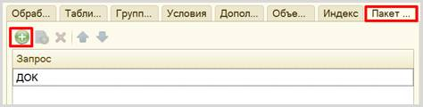
Снова открывается вкладка «Таблицы поля». Здесь нужно выбрать уже остатки из регистра накопления.
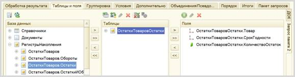
Полученные данные тоже положим во временную таблицу. Переходим на вкладку «Дополнительно» и создаем временную таблицу «ОСТ».
Переходим на вкладку «Индекс» и снова индексируем по товару.
Осталось лишь добавить последний запрос, который сможет объединить в себе данные из двух получившихся временных таблиц. Вкладка «Пакет запросов», кнопка «Добавить».
Необходимо выбрать следующие поля из двух таблиц:
Теперь нужно перейти на вкладку «Связь» и связать между собой две временные таблицы по полю «Товар».
Далее переходим на вкладку «Порядок» и упорядочиваем элементы в запросе по товару и сроку годности.
Далее переходим на вкладку «Итоги» и снова просуммируем все товары.
По окончании работы над итогами нажимаем на кнопку «ОК».
В процедуре «ОбработкаПроведения» появился код, который был сформирован конструктором запроса.
Под текстом запроса можно увидеть цикл в цикле: внешний цикл перебирает товары, а внутренний – сроки годности этих товаров.
Пример
Предположим, что некий клиент решил купить 50 пакетов молока. В первую очередь, нужно проверить, а есть ли у нас 50 пакетов на складе?
Именно такую проверку и нужно добавить. В случае нехватки товаров нужно вывести пользователю сообщение и отметить проведение.
Теперь будем перебирать партии.
Пример
Предположим, что в документе указано 50 пакетов молока. На складе в одной партии – 20 пакетов, а в другой – 40. Необходимо сначала списать 20 из первой партии, а затем – 30 из второй.
Добавим переменную «ОсталосьСписать» – она будет своеобразным счетчиком, который мы будем вести до нуля.
Теперь проверяем, сколько осталось товаров в конкретной партии и списывать это количество из переменной «ОсталосьСписать», после чего будем переходить к следующей партии.
Списать из конкретной партии можно не больше, чем в ней есть, или меньше. Воспользуемся функцией «Мин», которая выбирает наименьшее из заданных в нее чисел.
Теперь в переменной «Списать» хранится то значение, которое мы можем легко списать и при этом не получить отрицательных остатков. Можно делать движение в регистр накопления. Скопируем ранее закомментированный текст, добавим в цикл и раскомментируем.
Изменим вид движения на «Расход», поскольку данный документ должен делать движения со знаком «-» (минус), то есть уменьшать значение в регистре. Также изменим «Товар», «Срок годности» и «Количество».
Далее нужно уменьшить количество товаров, которые еще нужно списать, и добавить дополнительное условие на переменную «ОсталосьСписать».
Установим маркер формирования движений в значение «Истина».
Целиком получившаяся процедура должна выглядеть следующим образом:
Проверим работоспособность разработанной информационной системы.
Откроем отчет по остаткам.
Всего имеется 35 единиц молока «Буренка». Попробуем продать 25 единиц молока.
Для этого добавим документ «Продажа товаров». Полученный документ необходимо провести.
Если появились проблемы с проведением документа «Продажа товаров», тогда вернитесь к списку всех документов и отмените их проведение. Для этого выделите документ в списке, нажмите на него правой кнопкой мыши и выберите пункт меню «Отменить проведение». Сделайте это для всех документов. Затем проведите документы заново.
Вернемся к отчету и сформируем его.
Система списала 20 единиц молока из партии со сроком годности до 17 сентября, и еще 5 – из партии со сроком годности до 19 сентября.
Поставленная задача решена.